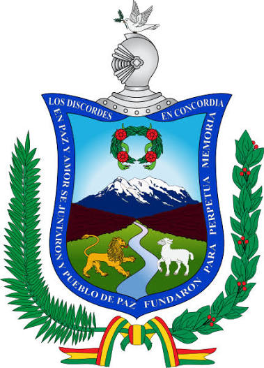

FUNDACION DE LA PAZ
por: asbel montaño peñaloza
La Paz fue fundada el 20 de octubre de 1548 por el conquistador español Alonso de Mendoza en Laja, y luego trasladada al valle de Chuquiago Marka para conmemorar el fin de las guerras civiles en el Virreinato del Perú. Es la sede de gobierno de Bolivia y cuna de la independencia americana.
.jpg) | .jpg) |
 |  |